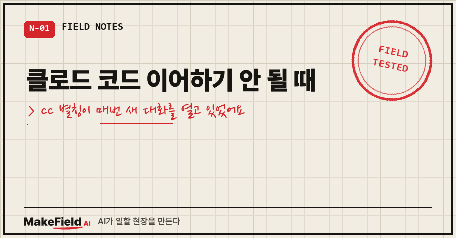
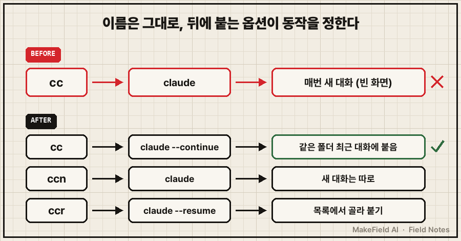
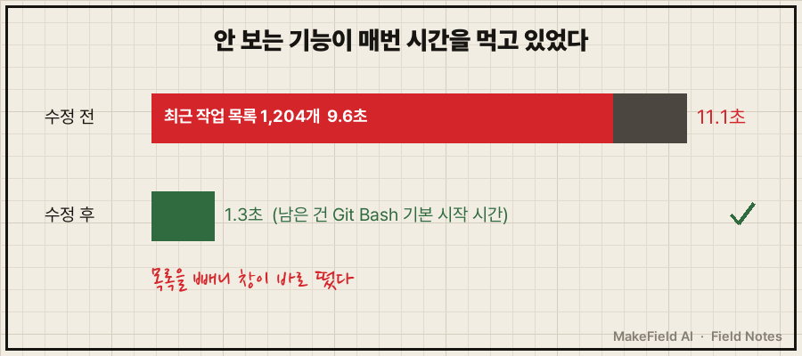
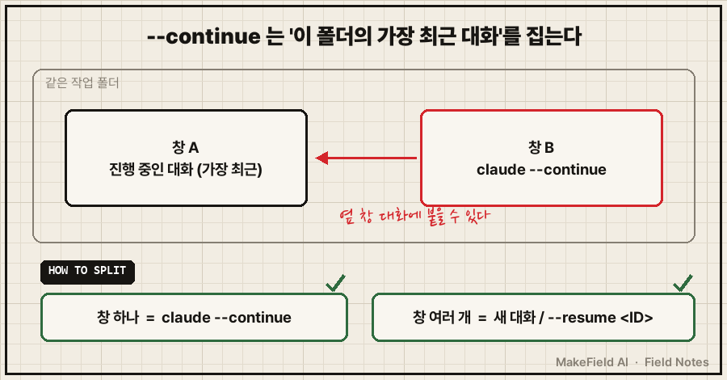

터미널에 cc를 쳤어요.
어제 하던 대화가 이어서 뜰 줄 알았는데, 빈 화면이 떴습니다.
그리고 이상하게 느리기까지 했어요.
결론부터 적으면, 클로드 코드 이어하기가 안 될 때는 AI가 아니라 실행 명령부터 보세요. 그냥 claude는 매번 새 대화를 열고, 직전 대화에 붙으려면 claude --continue(줄여서 -c)를 써야 합니다. 제 경우엔 예전에 만들어 둔 단축키 cc가 그냥 claude로 묶여 있었어요. 이어하기가 안 된 게 고장이 아니라 정상 동작이었던 거죠..
저는 현장 제어 일을 15년 해 온 사람이에요. 퇴근 후엔 집 윈도우 PC와 맥북에 클로드 코드를 띄워 두고 개인 자동화를 굴리는데, 이번 건은 그 윈도우 쪽에서 터졌습니다.
1. "왜 맥처럼 자연스럽게 안 붙지?" — 증상부터
10월 12일 새벽, 원격으로 윈도우 PC에 접속해 cc를 쳤어요. 그때 AI에게 보낸 말이 그대로 남아 있습니다.
- "이어하기 되는거야?"
- "지금 엄청 느린데"
- "왜 맥처럼 자연스럽게 안붙지?"
증상은 두 개였어요. 이전 대화가 안 붙는다, 그리고 느리다.
처음엔 둘이 같은 원인인 줄 알았는데, 뜯어보니 원인이 따로였습니다.
2. 원인은 별칭 한 줄이었어요
AI가 터미널 설정 파일 ~/.bash_profile을 열어 보니, 43번째 줄에 이렇게 적혀 있었습니다.
alias cc='claude'cc라는 짧은 이름이 claude 하나만 실행하도록 묶여 있던 거예요.
공식 CLI 문서 기준으로 claude는 "대화형 세션 시작", 즉 새 대화입니다. 이전 대화를 부르는 옵션은 따로 있어요(code.claude.com CLI 문서, 2026-11-13 확인).
| 명령 | 하는 일 | 언제 쓰나 |
|---|---|---|
claude | 새 대화 시작 | 다른 일을 새로 시작할 때 |
claude --continue (-c) | 현재 폴더의 가장 최근 대화를 불러옴 | 방금 하던 일을 이어갈 때 |
claude --resume (-r) | 세션 ID·이름으로 지정해서 불러오거나, 목록에서 고름 | 며칠 전 특정 대화로 돌아갈 때 |

그래서 이렇게 바꿨어요.
alias cc='claude --continue' # 직전 대화 이어하기
alias ccn='claude' # 새 대화는 명시적으로
alias ccr='claude --resume' # 목록에서 골라 붙기손에 익은 cc는 "이어하기"로 두고, 새 대화는 ccn으로 따로 뺐어요. 매일 치는 단축키는 제가 기대하는 동작에 맞춰야 한다는 판단이었습니다.
3. 느린 건 다른 원인이었어요
별칭을 고쳐도 느림은 남았어요. AI가 떠 있는 프로세스를 세어 보니 이랬습니다.
claude 프로세스 5개 동시 가동
- 그중 1개는 10-10 13:09부터 이틀째 실행 중, 메모리 713MB
별도 세션 기록 파일 1개 = 110MB클로드 코드는 대화 기록을 세션 파일로 저장해 두는데, 이어 붙일 때 이걸 다시 읽어요. 110MB짜리 대화를 잡으면 불러오고 압축하는 데 시간이 걸린다는 게 AI의 진단이었어요.
여기서 AI가 한 판단 하나가 기억에 남아요. 좀비처럼 보이는 프로세스를 강제로 끄지 않았어요. 다른 창에서 아직 쓰는 대화가 섞여 있을 수 있어서, 어떤 창이 살아 있어야 하는지 제가 확인한 다음에만 정리하기로 했습니다. 110MB 세션은 새 대화로 갈아타고 이어가기 메모를 남기는 쪽으로 처리 계획만 적어 뒀어요.
4. 같은 날, 창 뜨는 데 11초 걸리던 것도
내친김에 터미널 새 창이 늦게 뜨는 것도 봤어요. 시작할 때 메뉴를 띄우는데, 그 메뉴에 '최근 작업 목록'이 붙어 있었거든요.
로그인 셸 시작 11.1초
└ 그중 약 9.6초 = 작업 기록 1,204개 정렬 + 항목마다 세션 파일 조회목록은 제가 보지도 않던 거라 빼 버렸어요. 결과는 11.1초 → 1초대(1.3초). 남은 시간은 Git Bash 자체가 뜨는 시간이었습니다.
메뉴 기본값도 Enter = 이어하기로 맞췄어요. 이어할 대화가 없으면 새 대화로 넘어가게 했고요.
2|'') claude --continue || claude ;; # Enter = 이어하기, 실패하면 새 대화
5. --continue를 일부러 안 쓴 자리도 있어요
3주 뒤인 11월 4일, 터미널을 꺼도 대화가 살아 있게 tmux(창을 띄워 둔 채 접속만 끊었다 다시 붙는 도구)에 메뉴를 하나 더 달았어요. 그런데 여기선 반대로 새 창에는 --continue 대신 새 대화를 넣었습니다.
이유는 공식 문서 문장에 있어요. --continue는 "현재 디렉터리의 가장 최근 대화"를 불러와요. 같은 폴더에서 창을 여러 개 띄워 쓰면, 새 창이 옆 창에서 진행 중인 대화에 붙을 수 있다는 뜻이죠. 그래서 '이어하기'는 한 창에서 쓸 때만, 여러 창일 땐 새 대화나 --resume으로 집어서 붙이게 나눴어요.

이어하기 안 될 때 점검 순서
alias명령으로 내 단축키가 실제로 뭘 실행하는지 본다 (claude만 있으면 매번 새 대화)- 대화를 시작했던 폴더에서
claude --continue를 쳤는지 본다 (폴더가 다르면 다른 대화를 찾음) - 특정 대화가 필요하면
claude --resume으로 목록에서 고른다 - 느리면 떠 있는 claude 프로세스 수와 세션 파일 크기를 본다 — 끄는 건 어떤 창을 살릴지 정한 뒤에
자주 묻는 질문
Q. 클로드 코드 이어하기와 resume은 뭐가 달라요?
--continue는 지금 폴더의 가장 최근 대화 하나에 바로 붙어요. --resume은 ID나 이름으로 지정하거나 목록에서 골라 붙습니다. 최근 대화가 아닌 걸 원하면 resume이에요.
Q. 이어하기 했는데 엉뚱한 대화가 떠요.
폴더를 확인해 보세요. 기준이 '현재 폴더'라서, 다른 폴더에서 치면 거기 최근 대화가 붙어요. 같은 폴더에 창이 여러 개면 옆 창 대화가 잡힐 수도 있고요.
Q. 맥에서는 되는데 윈도우에서만 안 돼요.
두 컴퓨터의 별칭이 같은지부터 보세요. 저도 아직 맥 쪽 cc 정의는 직접 확인 못 해서, 두 기기 설정을 맞추는 걸 남은 일로 적어 뒀습니다.
"AI가 이전 대화를 잊었다"고 느껴질 때, 범인이 AI가 아니라 제가 만든 단축키 한 줄일 수도 있다는 걸 이번에 배웠어요.
팀 PC마다 다른 터미널·AI 도구 설정을 한 번에 정리하고 싶으시면 makefield.ai에서 연락 주셔도 됩니다.
출처
- Claude Code CLI reference — "
claude -c: Continue most recent conversation in current directory" / "--resume,-r: Resume a specific session by ID or name, or show an interactive picker to choose a session" → https://code.claude.com/docs/en/cli-reference (2026-11-13 확인) - 실측: 2026-10-12·11-04 개인 윈도우 PC 터미널 설정 수정 기록(사용자명·경로·세션 ID 제외)
태그: #클로드코드이어하기 #클로드코드 #ClaudeCode #claudecontinue #clauderesume #클로드코드이전대화 #클로드코드세션 #클로드코드느림 #터미널별칭 #bash_profile #alias설정 #윈도우터미널 #GitBash #AI코딩도구 #MakeFieldAI